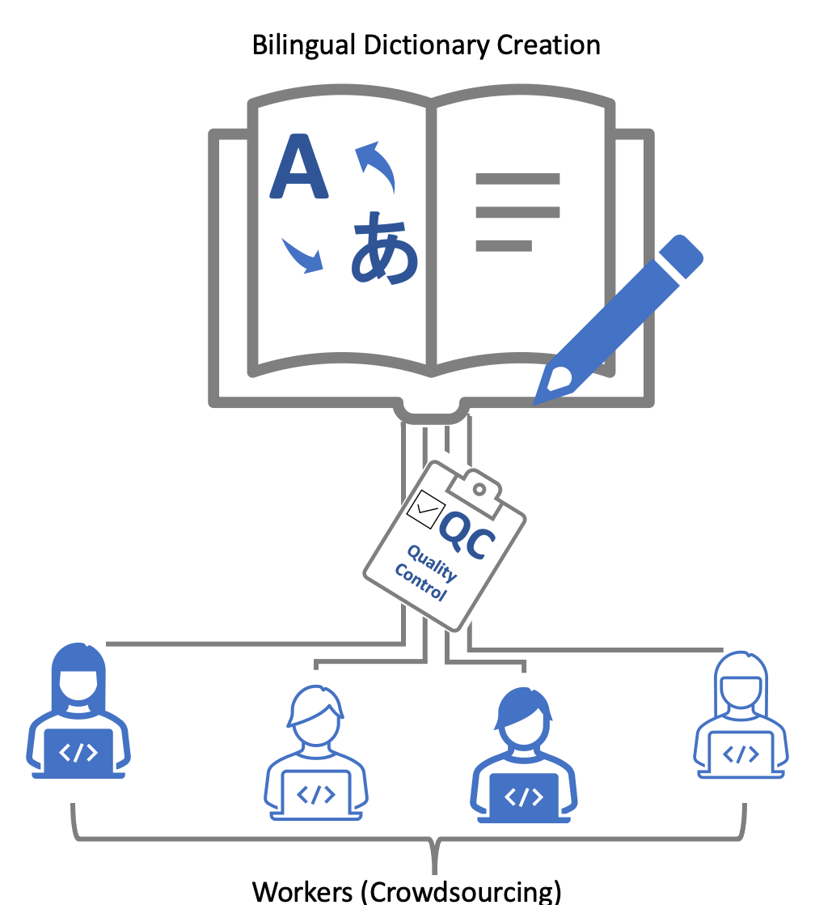
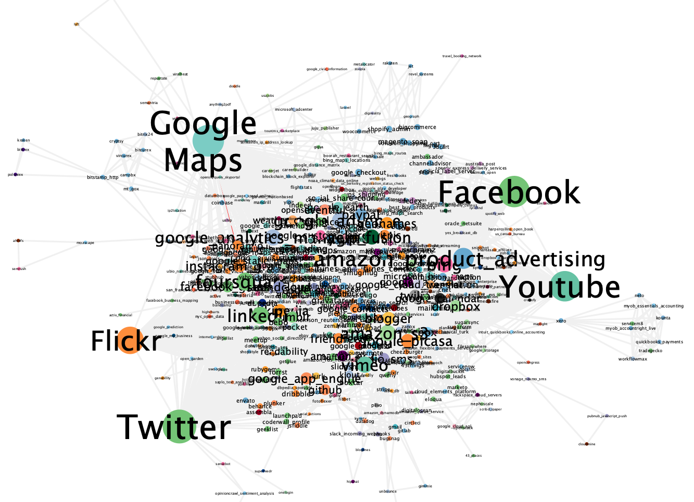

サービスコンピューティング
Webサービスやクラウドソーシング、ブロックチェーンの研究開発に取り組んでいます。

クラウドソーシングを用いた対訳辞書作成のための品質管理手法
従来のクラウドソーシングを用いた対訳辞書作成では、複数人の作業者が単語を自由に翻訳し、 多数決で正誤を評価していました。しかし、危機言語などの話者の少ない言語の対訳辞書作成にこの手法を用いると、 その言語に精通していない作業者が多数決に多く加わってしまい、多数決による評価の信頼性が著しく低下します。 そこで、信頼値に基づいて対応言語ペアに精通した作業者にタスクを割り当てる手法と、 複数の評価タスクに対する評価列で多数決を行う超問題を用いた回答統合手法を用いることで、 生成される対訳データの品質向上を目指しています。
[地田大樹, 村上陽平. 対訳辞書作成のための信頼に基づくクラウドソーシングの評価, サービスコンピューティング(SC), 電子情報通信学会技術研究報告, Vol. 119, No. 482, SC2019-49, pp. 91-96, 2020.]
発表情報: 山本涼太郎, 村上陽平. Deep Knowledge Tracingを用いた対話作成タスクの予測, 情報処理通信学会総合大会, 2024

ブロックチェーンに基づく分散型クラウドソーシング基盤
信頼のできるクラウドソーシングプラットフォーム事業者を仮定できない環境においても、 複数の組織で構築されるパーミッション型ブロックチェーンを分散して運用することで、 作業者の作業履歴を頑健に保持する、安定したクラウドソーシング基盤の運用を実現します。 さらに、成果物の利用に応じて、利用者と作業者の間で直接マイクロペイメントを可能にするスマートコントラクトを実装することで、 低資源言語のような利用者と作業者の少ない環境でもクラウドソーシングを持続可能とすることを目指します。
[張 禹王, 村上陽平. 低資源言語ためのブロックチェーンに基づく非中央集権型辞書システム, サービスコンピューティング(SC), 電子情報通信学会技術研究報告, Vol. 120, No. 434, SC2020-37, pp. 25-30, 2021.]

グラフ埋め込みを用いた代替サービスのクラスタリング
複数のサービスを組み合わせ、作成された新しいサービスを複合サービスといいます。 複合サービスは構成要素のサービスよりも拡張した機能を提供できたり、既存のサービスを再利用できたりする利点があります。 例えば、地図情報サービスと天気情報サービスを組み合わせることで、地図上に各地方の天気を表示する複合サービスが作成できます。 このような複合サービスでは、組み合わされた一部のサービスが利用できなくなった時に、連鎖的に複合サービス全体に影響が生じます。 本研究では、この問題を解決するために、複合サービスのサービス依存関係のネットワークに基づくクラスタリングを行い、 利用できなくなったサービスと機能的に類似するサービスを発見することを目指します。
[大久保弘基, 村上陽平. グラフ埋め込みを用いた代替サービスの推薦, サービスコンピューティング(SC), 電子情報通信学会技術研究報告, Vol. 119, No. 482, SC2019-48, pp. 85-90, 2020.]
発表情報: 松本賢司, 村上陽平. サービス連携関係に基づくソフトクラスタリング, 情報処理通信学会総合大会, 2024